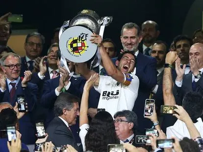
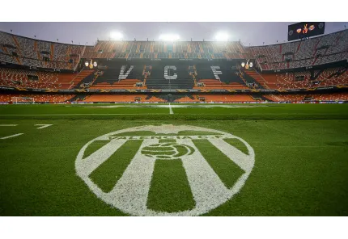

Fundado en 1919, el Valencia CF es uno de los clubes más exitosos del fútbol español. Ha ganado múltiples Ligas, Copas del Rey y ha tenido un papel destacado en competiciones europeas.
Posición: Delantero
Posición: Centrocampista
Posición: Portero
El estadio Mestalla, inaugurado en 1923, es el hogar del Valencia CF. Tiene capacidad para más de 48,000 espectadores y es conocido por su atmósfera intensa y cercana al campo.
